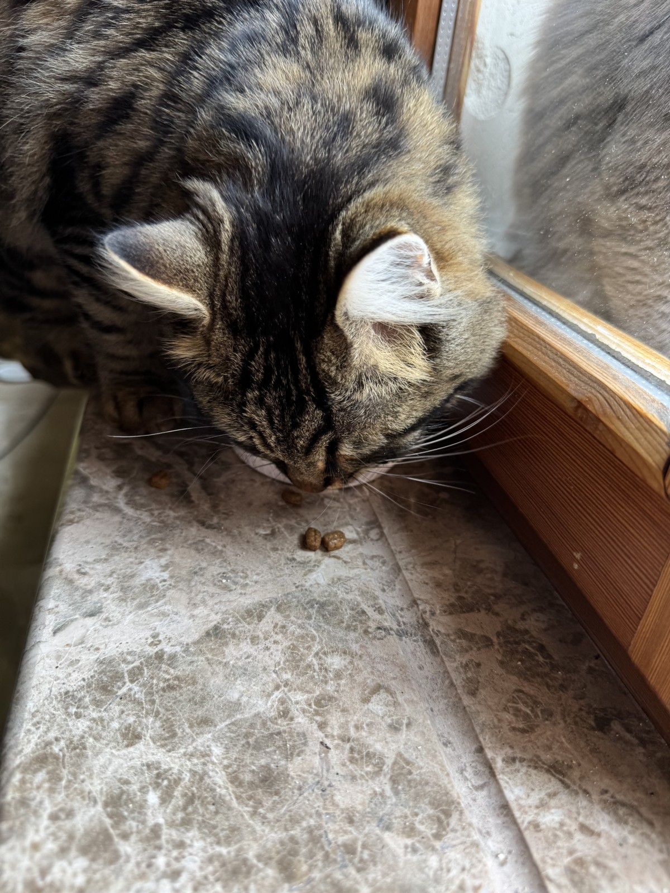
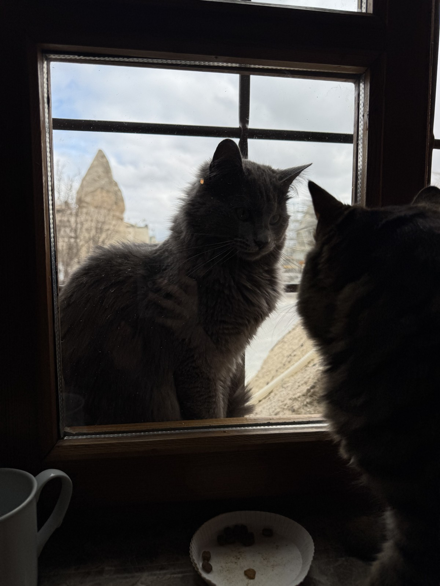

2004년부터 16년간 아야소피아의 터줏대감. 오바마 대통령도 쪼그려 앉아 쓰다듬고 갔죠. 2020년 무지개다리를 건넜어요.

팔꿈치 괴고 누운 짤로 세계적 밈이 된 고양이. 2016년 세상을 뜨자 시에서 동상까지 — 한 달 만에 도난 소동도!

한 이맘은 추운 겨울 길고양이를 예배 중에도 모스크 안으로. 엄마가 새끼를 설교단에 올린 사진이 10억 클릭+.
글리 Gli
16년을 그 자리에서 — 아야소피아의 터줏대감
이름은 튀르키예어로 ‘사랑의 결합’이라는 뜻. 2004년, 1,500년 된 아야소피아에서 태어나 그곳에서만 16년을 살았어요. 인스타그램 팔로워는 12만 명을 넘겼어요.
결정적 장면은 2009년 — 방문한 오바마 대통령이 쪼그려 앉아 글리를 쓰다듬은 거예요. 그 사진이 퍼지며 ‘관광객보다 유명한 고양이’가 됐죠.
2020년 11월, 16살로 세상을 떠나 아야소피아 안뜰에 묻혔어요. 살아서도 죽어서도 그 건물의 일부가 된 셈.

톰빌리 Tombili
세상에서 가장 편한 자세의 전설
‘통통이’라는 뜻. 인도 턱에 팔꿈치를 괴고 사람처럼 비스듬히 누운 사진 한 장으로 2016년 전 세계 밈이 됐어요.
그해 8월 세상을 뜨자, 조각가가 그 포즈 그대로 동상을 세워 ‘세계 동물의 날’에 제막했죠. 부시장이 연설하고 수백 명이 모였어요.
그런데 한 달 뒤 동상이 사라졌다가, SNS가 들끓자 누군가 슬쩍 도로 갖다 놨어요. 고양이 동상 하나가 도시를 들썩이게 한 사건.
모스크의 고양이들
이맘 무스타파 에페와 ‘예배 중의 손님’
위스퀴다르의 아지즈 마흐무드 휘다이 모스크. 이맘 무스타파 에페는 추운 겨울, 길고양이들이 얼지 않게 예배 시간에도 모스크 문을 열어 안으로 들였어요.
그가 올린 영상엔 엄마 고양이가 새끼를 한 마리씩 물고 ‘민바르(설교단)’ 계단을 오르는 장면이 있어요. 이맘이 설교하는 자리에 고양이 가족이 자리 잡은 거죠 — 전 세계로 퍼졌어요.
이맘은 말해요. “고양이들은 예배 중에도 우리와 함께 있어요. 신자들도 좋아해요.” 지금도 그 모스크엔 열 마리쯤 산대요.

이스탄불을 세계에 알린 다큐 ‘케디’

“고양이가 발밑에서 당신을 올려다보며 야-옹 한다면,
그건 삶이 당신에게 미소 짓는 거예요.”
이스탄불에서 나고 자란 감독 제이다 토룬이, 거리 고양이를 ‘고양이 눈높이’로 따라간 다큐예요. 한국엔 2017년 ‘고양이 케디’로 개봉했죠.
후보 35마리 중 최종 7마리. 사람이 주인공이 아니라 ‘함께 사는 존재’라는 시선이 전 세계를 울렸어요.
예고편은 ‘영상’ 탭에서, 자세한 이야기는
후보 35마리 → 19마리 촬영 → 최종 7마리. 다 캐릭터가 달라서 보는 재미가 있어요.


국내 개봉 땐 ‘사기꾼·돌+냥이·냥블리·애교쟁이·헌터·유냥독존·젠틀맨’으로 소개됐어요 — “사람보다 더 사람 같은 고양이들이 보내는 따뜻한 러브레터”. 각 고양이 곁엔 ‘그를 돌보는 사람들’ 인터뷰가 따라붙죠.